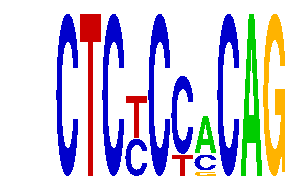

family_12 |
|---|
|  |
| Download PWM |
| Download instances (motifs) |
| Show motif distribution |
Query_ID | Query_Consensus | Subject_Name | Source_DB | Subject_ID | Length | Orientation | Offset | Divergence | Overlap | Subject_Consensus |
|---|---|---|---|---|---|---|---|---|---|---|
| family_12 | CTCTCCACAG | SNAI1 | HOCOMOCO | SNAI1_HUMAN.H10MO.C | 8 | as given | 6 | 0.414 | 4 | NCAGGTGN |
| family_12 | CTCTCCACAG | MYF6 | HOCOMOCO | MYF6_HUMAN.H10MO.C | 7 | as given | 6 | 0.573 | 4 | GCAGCTG |
| family_12 | CTCTCCACAG | TFAP4 | HOCOMOCO | TFAP4_HUMAN.H10MO.C | 11 | reverse-complement | 4 | 0.603 | 6 | RYCAGCTGYNG |
| family_12 | CTCTCCACAG | SNAI2 | HOCOMOCO | SNAI2_HUMAN.H10MO.C | 7 | as given | 6 | 0.617 | 4 | NCAGGTG |
| family_12 | CTCTCCACAG | ZEB1 | HOCOMOCO | ZEB1_HUMAN.H10MO.B | 11 | as given | 5 | 0.720 | 5 | NNCAGGTGNNN |
| family_12 | CTCTCCACAG | Tcf3 | JASPAR | MA0522.1 | 11 | as given | 5 | 0.805 | 5 | SMCAGCTGCWN |
| family_12 | CTCTCCACAG | UBIP1 | HOCOMOCO | UBIP1_HUMAN.H10MO.D | 7 | as given | 6 | 0.853 | 4 | SCAGARA |
| family_12 | CTCTCCACAG | RRAGTTGT | JASPAR | PF0129 | 8 | reverse-complement | -4 | 0.875 | 4 | GAAGTTGT |
Sequence | Start_position (from start) | Start_position (from end) | Average conservation | Best conservation score | Instance_with_best_CS | Best_Z-score | Instance_with_best_ZS | Strand |
|---|---|---|---|---|---|---|---|---|
| chr10:53058509-53062044 | 2920 | 2930 | 0.0003 | 0.001 | CTCYCYACAG | 12.997807 | CTCYCYACAG | 1 |
| chr4:147360070-147361070 | 991 | 1001 | 0.1351 | 0.328 | CTCYCCMCAG | 12.997807 | CTCYCYACAG | 1 |
| chr5:122552226-122553226 | 469 | 479 | 0.4077 | 1 | CTCYCCRCAG | 13.168963 | CTCYCCMCAG | 1 |
| chr2:113882810-113883810 | 390 | 400 | 0.3684 | 0.746 | CTCYCCRCAG | 13.168963 | CTCYCCMCAG | -1 |
| chr1:191598503-191599503 | 694 | 704 | 0.0007 | 0.002 | CTCYCCRCAG | 13.168963 | CTCYCCMCAG | 1 |
| chr2:17378003-17379003 | 393 | 403 | 0.0422 | 0.096 | CTCYCYACAG | 12.997807 | CTCYCYACAG | -1 |
| chr9:120778468-120779468 | 945 | 955 | 0 | 0 | CTCYCCMCAG | 13.168963 | CTCYCCMCAG | 1 |
| chr18:4995861-4996861 | 138 | 148 | 0.0862 | 0.158 | CTCYCCMCAG | 13.168963 | CTCYCCMCAG | -1 |
| chr9:25060245-25061245 | 584 | 594 | 0.729 | 0.985 | CTCYCYACAG | 12.997807 | CTCYCYACAG | -1 |
| chr13:38445406-38446406 | 140 | 150 | 0.4245 | 0.995 | CTCYCYACAG | 12.997807 | CTCYCYACAG | 1 |
| chr17:82131875-82133469 | 1340 | 1350 | 0.0212 | 0.042 | CTCYCCMCAG | 13.168963 | CTCYCCMCAG | 1 |
| chr14:55602242-55603242 | 556 | 566 | 0.0001 | 0.001 | CTCYCCMCAG | 13.168963 | CTCYCCMCAG | -1 |
| chr11:94743641-94744641 | 544 | 554 | 0.4038 | 0.677 | CTCYCCMCAG | 13.168963 | CTCYCCMCAG | 1 |
| chr2:148264463-148265463 | 430 | 440 | 0.021 | 0.044 | CTCYCYACAG | 13.168963 | CTCYCCMCAG | -1 |
| chr16:96348364-96349364 | 584 | 594 | 0.111 | 0.542 | CTCYCCRCAG | 12.697031 | CTCYCCRCAG | -1 |
| chr16:85133690-85134690 | 641 | 651 | 0.0021 | 0.005 | CTCYCCRCAG | 13.168963 | CTCYCCMCAG | -1 |
| chr1:166249387-166250387 | 492 | 502 | 0.0006 | 0.001 | CTCYCCRCAG | 12.697031 | CTCYCCRCAG | -1 |
| chr4:133848968-133849968 | 645 | 655 | 0.0593 | 0.082 | CTCYCCRCAG | 13.168963 | CTCYCCMCAG | 1 |
| chr5:31873293-31874293 | 156 | 166 | 0.002 | 0.005 | CTCYCCRCAG | 12.697031 | CTCYCCRCAG | 1 |
| chr1:72991230-72992230 | 403 | 413 | 0.0091 | 0.044 | CTCYCCMCAG | 12.697031 | CTCYCCRCAG | 1 |
| chr9:101099880-101101569 | 783 | 793 | 0.001 | 0.003 | CTCYCYACAG | 12.997807 | CTCYCYACAG | 1 |
| chr10:7561382-7562382 | 38 | 48 | 0.1087 | 0.337 | CTCYCCRCAG | 12.997807 | CTCYCYACAG | -1 |
| chr8:59795626-59796626 | 38 | 48 | 0.0001 | 0.001 | CTCYCCRCAG | 13.168963 | CTCYCCMCAG | 1 |
| chr14:63990053-63991053 | 779 | 789 | 0.0101 | 0.014 | CTCYCCMCAG | 13.168963 | CTCYCCMCAG | -1 |
| chr10:7561382-7562382 | 491 | 501 | 0.0089 | 0.023 | CTCYCCMCAG | 13.168963 | CTCYCCMCAG | 1 |
| chr14:55612225-55613225 | 516 | 526 | 0.0005 | 0.003 | CTCYCYACAG | 13.168963 | CTCYCCMCAG | 1 |
| chr14:63881391-63882391 | 520 | 530 | 0.0012 | 0.007 | CTCYCYACAG | 13.168963 | CTCYCCMCAG | 1 |
| chr11:88709913-88710913 | 250 | 260 | 0.0003 | 0.002 | CTCYCCMCAG | 13.168963 | CTCYCCMCAG | 1 |
| chr2:50826374-50827374 | 752 | 762 | 0.947 | 0.997 | CTCYCYACAG | 12.997807 | CTCYCYACAG | 1 |
| chr9:115299592-115300592 | 431 | 441 | 0.0052 | 0.017 | CTCYCYACAG | 12.997807 | CTCYCYACAG | 1 |
| chr14:26136986-26137986 | 152 | 162 | 0.0227 | 0.076 | CTCYCCMCAG | 13.168963 | CTCYCCMCAG | 1 |